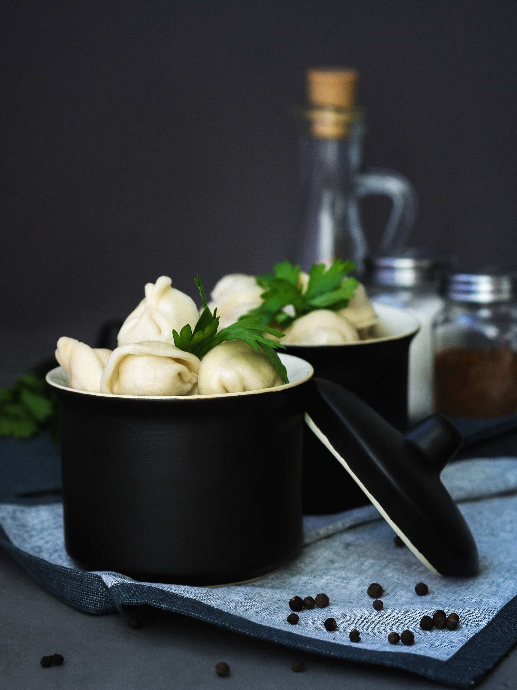

Pelmeni
Pelmeni are traditional Russian meat-filled dumplings. These dumplings are a common convenience food - big batches can be frozen and quickly boiled or fried on demand.
What you need:
| Amount | Ingredients |
|---|---|
| 1 | egg |
| 1 teaspoon | vegetable oil |
| 1 teaspoon | salt |
| 3/4 cup | warm water |
| 3 cups | flour |
| 1 tablespoon | flour |
| 18 ounces | ground beef |
| 1 | small onion, chopped |
| 1 1/2 tablespoons | ice-cold water |
| 1 tablespoon | coarse salt |
| 1 | freshly ground pepper |
How to prepare:
- Combine egg, vegetable oil, and salt in a measuring cup; add enough water to fill to 1 cup. Pour into a bowl, add 3 cups flour, and knead into a smooth, elastic dough. Cover with a kitchen towel and rest for 30 minutes.
- Dust a baking sheet lightly with 1 tablespoon flour.
- Combine ground beef, onion, water, salt, and pepper in a bowl and mix filling thoroughly by hand or using a fork.
- Roll out a portion of the dough very thinly on a lightly floured surface and cut out 2 1/2-inch rounds with a cookie cutter or a wine glass. Keep the rest of the dough covered with a towel to avoid drying out. Place 1/2 to 1 teaspoon of filling on one side of the dough circle. Fold dough over and seal the edges using fingers, forming a crescent. Join the ends and pinch them together. Place on the prepared baking sheet. Repeat with remaining dough and filling. Freeze pelmeni for 30 minutes to prevent them from sticking together.
- Bring a large pot of lightly salted water to a simmer and drop small batches of frozen pelmeni into simmering water. Cook and stir until the meat is cooked and pelmeni float to the top, about 5 minutes. Continue cooking for an additional 5 minutes. Transfer to serving plates using a slotted spoon.